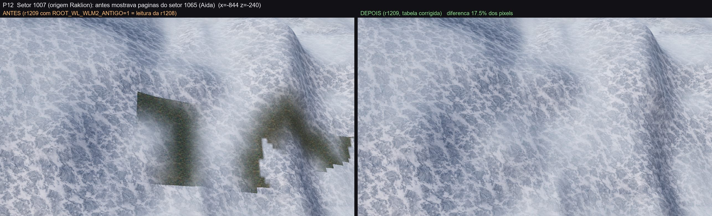
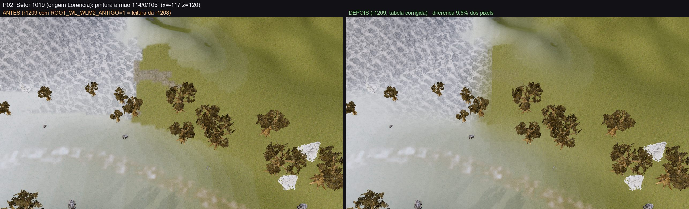
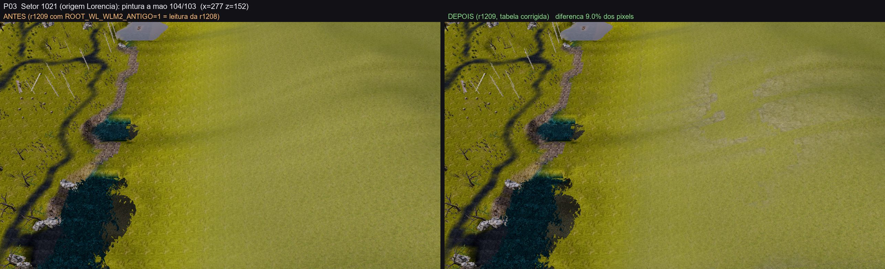
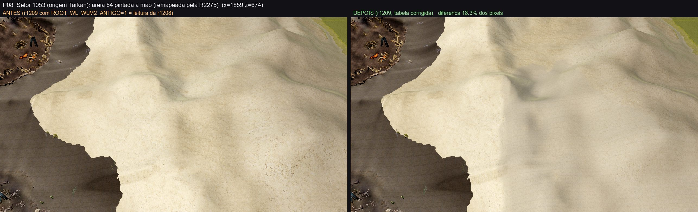
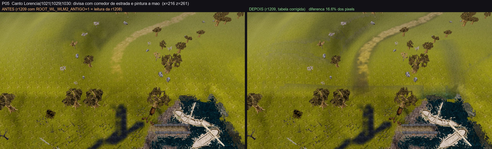
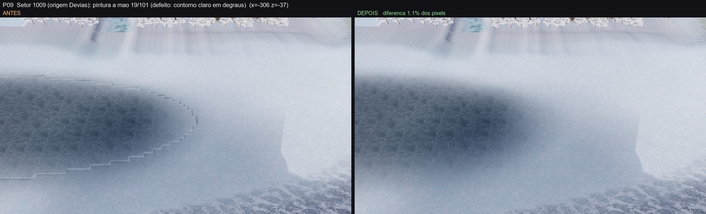
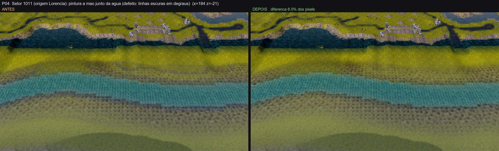
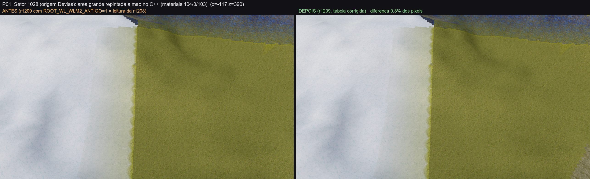

27/11, noite. Editor do World Link, build r1210. Em cada foto: esquerda = como o jogo mostrava até hoje; direita = com a correção.
A pintura à mão e o "suavizar divisa" que você fez no editor C++ estavam gravados no arquivo, mas o jogo procurava na linha errada da tabela. Só 2 setores liam alguma coisa, e Raklion mostrava a pintura da Aida. Agora cada setor lê a própria pintura, e o editor novo mostra igual ao jogo.
Melhorou

Raklion (setor 1007): sumiram as manchas verdes quadradas, que eram pintura da Aida aparecendo na neve.

Divisa perto de Lorencia (setor 1019): os degraus viraram transição macia.

Setor 1021: aparece a sua pintura de terra clara.
Precisa do seu olho

Tarkan (setor 1053): são traços seus de pincel. A cor fica igual, mas onde passou o pincel a areia perde o relevo da textura, e dá para ver o contorno do traço. Há duas saídas: apagar os traços no editor, ou o jogo manter o relevo quando a textura pintada for a mesma do chão (essa muda o mundo todo).

Canto de Lorencia com o porto: a faixa escura sobre a estrada e a mancha azulada junto da água são traços seus. A linha reta é a borda de Lorencia: o traço continuava para dentro da cidade, mas o chão próprio de Lorencia ainda não recebe pintura, então ele é cortado ali.
Contorno em degraus: corrigido (r1211)
Esquerda = r1210 (com o contorno); direita = r1211. O editor e o jogo batem (diferença de 0 a 2%, só a água animada).

Setor 1009 (Devias): o contorno claro em degraus sumiu, e a pintura ficou macia, como no editor C++.

Setor 1011, rio ao sul de Lorencia: as linhas finas escuras sumiram.
Sem mudança

Setor 1028 (Devias): a maior área que você repintou no C++ fica em células sem chão, por isso continua sem aparecer.